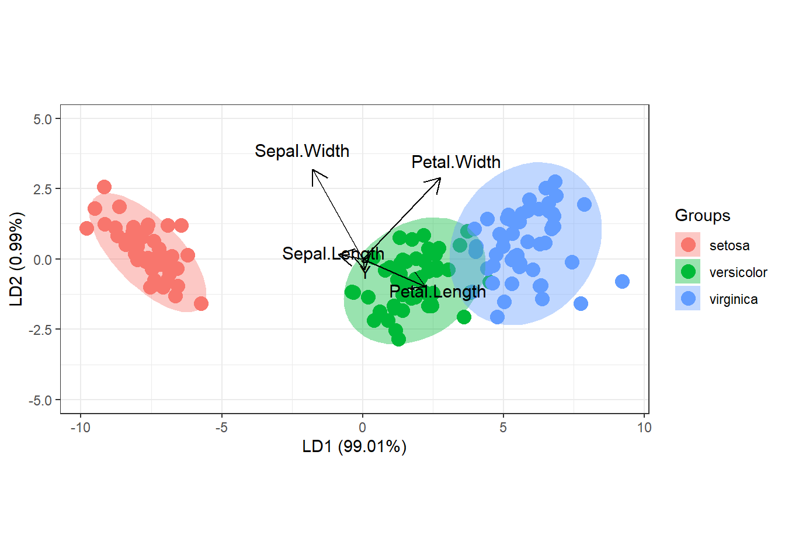

10 Análisis discriminante lineal (LDA)
El análisis discriminante lineal (LDA por sus siglas en inglés) es una clasificación de aprendizaje automático supervisado (binario o multimonial) y un método de reducción de dimensiones. LDA encuentra combinaciones lineales de variables que mejor “discriminan” las clases de la variable respuesta.
Un enfoque (Welch) de LDA supone que las variables predictoras son variables aleatorias continuas normalmente distribuidas y con la misma varianza. Para que se cumpla esta condición, normalmente deberemos escalar los datos
Para una variable respuesta de \(k\) niveles, LDA produce \(k-1\) (reglas) discriminantes utilizando el teorema de Bayes.
\[Pr[Y = C_l | X] = \frac{P[Y = C_l] P[X | Y = C_l]}{\sum_{l=1}^C Pr[Y = C_l] Pr[X | Y = C_l]}\]
donde \(Y\) es la variable respuesta, \(X\) son los predictores y \(C_l\) es la clase \(l\)-ésima. Entonces, la probablidad de que \(Y\) sea igual al nivel \(C_l\) dados los predictores \(X\) es igual a la probabilidad a priori de \(Y\) multiplicado por la probabilidad de observar \(X\) si \(Y=C_l\) dividido por la suma de todas las probabilidades de \(X\) data las priors. El valor predicho para cualquier \(X\) es simplemente \(C_l\) que tenga la probabilidad másxima.
Una forma de calcular las probabilidades es asumir que \(X\) tiene una distribución normal multivariante con medias \(\mu_l\) y varianza común \(\Sigma\). Entonces la función de discriminación lineal para el grupo \(l\) es
\[X'\Sigma^{-1}\mu_l - 0.5 \mu_l^{'}\Sigma^{-1}\mu_l + \log(Pr[Y = C_l])\]
La media teórica y la matriz de covarianza se estiman mediante la media muestral \(\mu=\bar{x}_l\) y la covarianza \(\Sigma=S\), y los predictores \(X\) se reemplazan con los predictores de muestra que denotamos \(u\).
Otro enfoque (Fisher) para LDA es encontrar una combinación lineal de predictores que maximice la matriz de covarianza entre grupos, \(B\), relativo a la matriz de covarianza dentro del grupo (intra-grupo) \(W\).
\[\frac{b'Bb}{b'Wb}\]
La solución a este problema de optimización es el vector propio correspondiente al valor propio más grande de \(W^{-1}B\). Este vector es un discriminante lineal (e.g. una variable). Resolver para la configuración para dos grupos la función discriminante \(S^{-1}(\bar{x}_1 - \bar{x}_2)\) donde \(S^{-1}\) es la inversa de la matriz de covarianza de los datos y \(\bar{x}_1\) y \(\bar{x}_2\) son las medias de cada predictor en los grupos de respuesta 1 y 2. En la práctica, una nueva muestra, \(u\) se proyecta sobre la función discriminante como \(uS^{-1}(\bar{x}_1 - \bar{x}_2)\), que devuelve una puntuación discriminante. Luego, una nueva muestra se clasifica en el grupo 1 si la muestra está más cerca de la media del grupo 1 que de la media del grupo 2 en la proyección:
\[\left| b'(u - \bar{x}_1) \right| - \left| b'(u - \bar{x}_2) \right| < 0\] En general, el modelo requiere \(CP + P(P + 1)/2\) parámetros con \(P\) predictores y \(C\) clases. El tener que estimar parámetros extra en los LDA es debido a que el modelo maneja explícitamente las correlaciones entre predictores. Esto debería proporcionar alguna ventaja a LDA sobre la regresión logística cuando hay correlaciones importantes, aunque ambos modelos no serán útiles cuando la multicolinealidad se vuelva extrema.
Take home message:
La formulación de Fisher es intuitiva, fácil de resolver matemáticamente y, a diferencia del enfoque de Welch, no implica suposiciones sobre las distribuciones subyacentes de los datos.
En la práctica, es mejor centrar y escalar los predictores y eliminar los predictores de varianza cercana a cero. Si la matriz aún no es invertible, deberíamos usar Penalized Least Squares o Regularización (se verán en otros cursos).
Veamos cómo hacer este análisis para los datos de cáncer de mama vistos en el capítulo anterior. Podemos llevar a cabo los análisis con muchas librerías, aquí usarems MASS. Tal y como es recomendado, usaremos los datos centrados y escalados (e.g normalizados) y eliminados las variables con varianza cercana a 0 que habíamos obtenido con la librería recipes. Empezaremos usando 2 variables para que la visualización sea más clara.
Call:
lda(diagnosis ~ ., data = breast_train_prep)
Prior probabilities of groups:
B M
0.6265664 0.3734336
Group means:
radius_mean texture_mean perimeter_mean area_mean smoothness_mean
B -0.5664024 -0.3345955 -0.5770578 -0.5518490 -0.268585
M 0.9503397 0.5614018 0.9682179 0.9259212 0.450646
compactness_mean concavity_mean `concave points_mean` symmetry_mean
B -0.4766017 -0.5636826 -0.603954 -0.2791966
M 0.7996673 0.9457761 1.013346 0.4684507
fractal_dimension_mean radius_se texture_se perimeter_se
B -0.004083286 -0.4447273 0.01149947 -0.4299533
M 0.006851150 0.7461867 -0.01929442 0.7213981
area_se smoothness_se compactness_se concavity_se
B -0.4401372 0.03661085 -0.2657811 -0.2982358
M 0.7384853 -0.06142761 0.4459414 0.5003956
`concave points_se` symmetry_se fractal_dimension_se radius_worst
B -0.3482647 -0.01040297 -0.1039087 -0.6048778
M 0.5843367 0.01745464 0.1743434 1.0148956
texture_worst perimeter_worst area_worst smoothness_worst
B -0.3618505 -0.6108433 -0.579185 -0.3274326
M 0.6071317 1.0249049 0.971787 0.5493836
compactness_worst concavity_worst `concave points_worst`
B -0.470998 -0.5448359 -0.6204192
M 0.790265 0.9141541 1.0409719
symmetry_worst fractal_dimension_worst
B -0.3412650 -0.2666749
M 0.5725924 0.4474411
Coefficients of linear discriminants:
LD1
radius_mean -3.519236589
texture_mean -0.058490416
perimeter_mean 3.109779310
area_mean 0.428021280
smoothness_mean 0.052473510
compactness_mean -0.949822914
concavity_mean 0.544892037
`concave points_mean` 0.087020117
symmetry_mean -0.002584399
fractal_dimension_mean -0.010309957
radius_se 1.383503849
texture_se -0.155362815
perimeter_se -0.994824973
area_se -0.186606167
smoothness_se 0.454403918
compactness_se 0.036469307
concavity_se -0.432226708
`concave points_se` 0.392940884
symmetry_se 0.017801482
fractal_dimension_se -0.321447172
radius_worst 2.894353152
texture_worst 0.426975371
perimeter_worst 0.435894836
area_worst -2.196976566
smoothness_worst -0.262348680
compactness_worst -0.072738404
concavity_worst 0.539409429
`concave points_worst` 0.212121460
symmetry_worst 0.213536977
fractal_dimension_worst 0.668105039Podemos observar cuánto vale la media para cada variable en cada uno de los grupos, y esto nos puede ayudar a saber qué variables son más importantes. Los coeficientes de los discriminantes lineales también nos pueden ayudar con la interpretación.
Podemos representar el valor de cada grupo para el primer discriminante lineal (sólo hay 1 ya que tenemos 2 grupos).
prd <- predict(fit.lda, breast_train_prep )
ldahist(data = prd$x[,1], g = breast_train_prep$diagnosis)
Vemos que los grupos quedan bien separados según el primer discrimiante lineal.
Si tuviéramos 3 grupos también podríamos representar la misma clasificación para el primer y el segundo discriminate lineal. Para ello usaríamos la librería ggord que está en GitHub. Usaremos los datos iris para ilustrar este caso:
# devtools::install_github("fawda123/ggord")
library(ggord)
lnr <- lda(Species~., iris)
ggord(lnr, iris$Species, ylim = c(-5, 5 ))
Podemos evaluar de forma manual cómo predice nuestro modelo en la muestra test para nuestro ejemplo de cáncer de mama usando la matriz de confusión:
p.train <- predict(fit.lda, breast_test_prep)$class
tt <- table(predict=p.train, Actual=breast_test_prep$diagnosis)
tt Actual
predict B M
B 106 5
M 1 58Cuya precisión podemos calcular como:
[1] 0.9647059También podemos evauar la capacidar de nuestro modelo usando, por ejemplo, 10-fold CV con la librería caret. En este caso bastaría con
fitControl <- trainControl(## 10-fold CV
method = "repeatedcv",
number = 10,
## repeated five times
repeats = 5)
train(diagnosis ~ .,
data=breast_train_prep,
method="lda",
trControl = fitControl)Linear Discriminant Analysis
399 samples
30 predictor
2 classes: 'B', 'M'
No pre-processing
Resampling: Cross-Validated (10 fold, repeated 5 times)
Summary of sample sizes: 359, 359, 359, 359, 359, 359, ...
Resampling results:
Accuracy Kappa
0.9543205 0.8995674Vemos que la precisión estimada en la muestra test es bastante parecida a la predicha mediante 10-fold CV.
| EJERCICIO (Entrega en Moodle: P2-LDA): |
| Implementa una función (idealmente podrímo usar el padigma MapReduce) que nos devuelva la precisión del método LDA usando K-fold CV. Úsa esta función para reproducir los resultados del ejemplo anterior. |